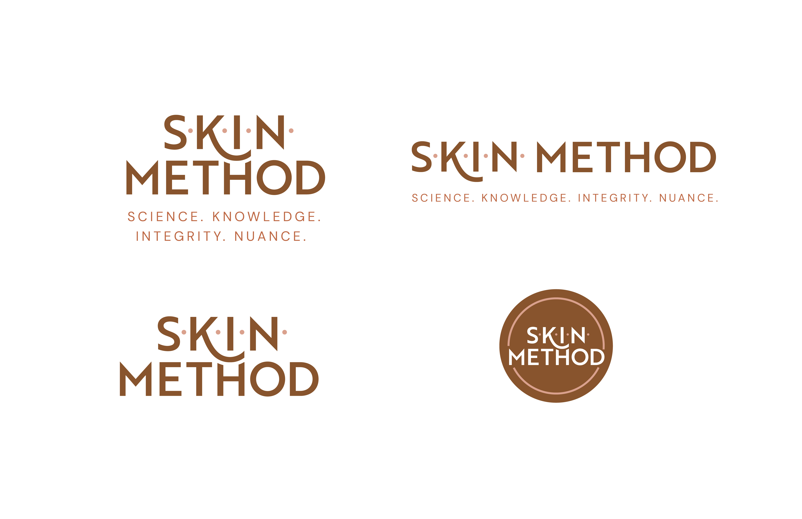
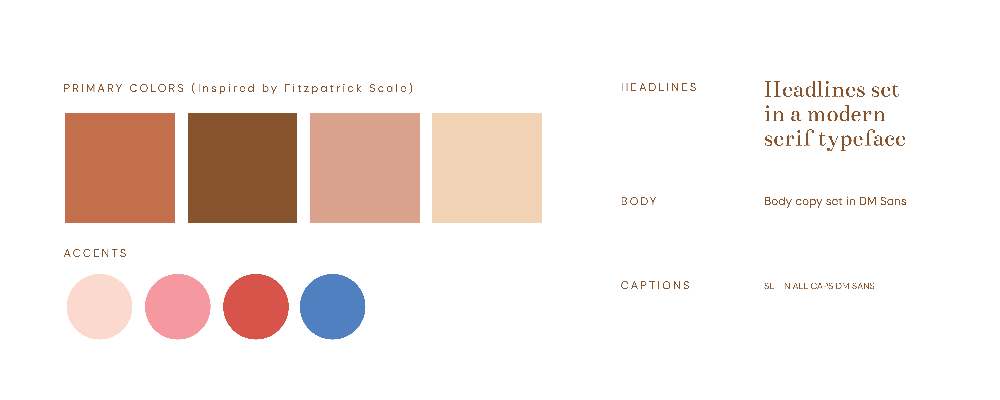
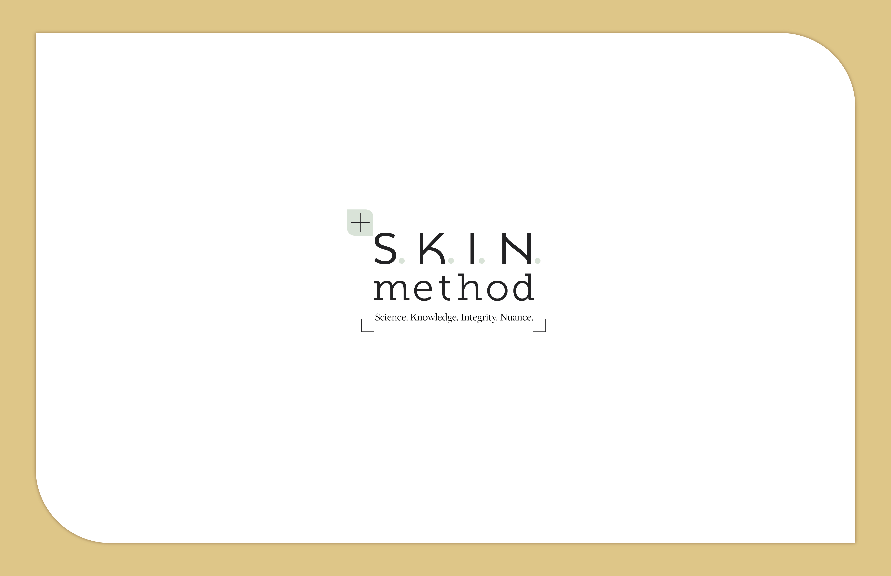
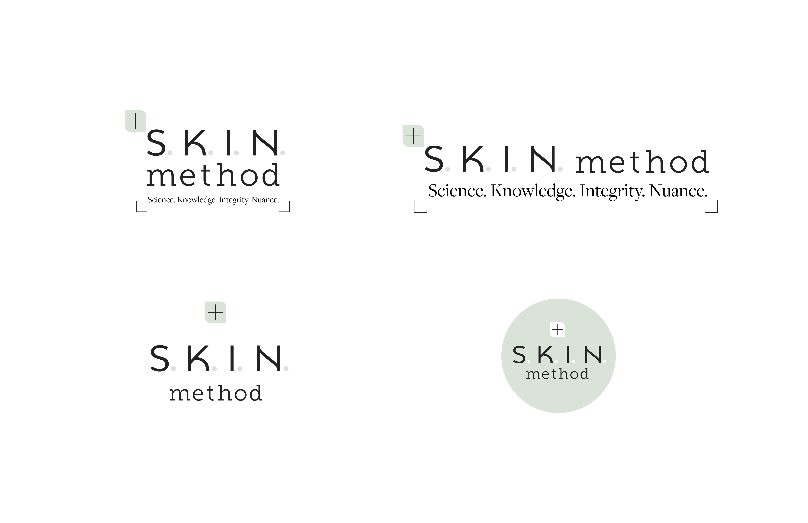
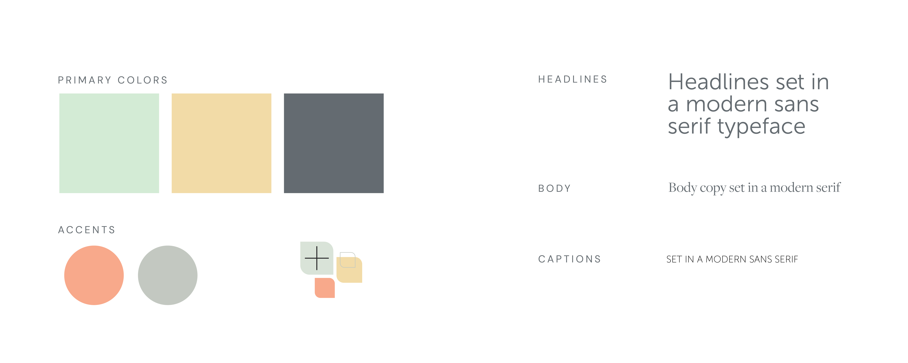
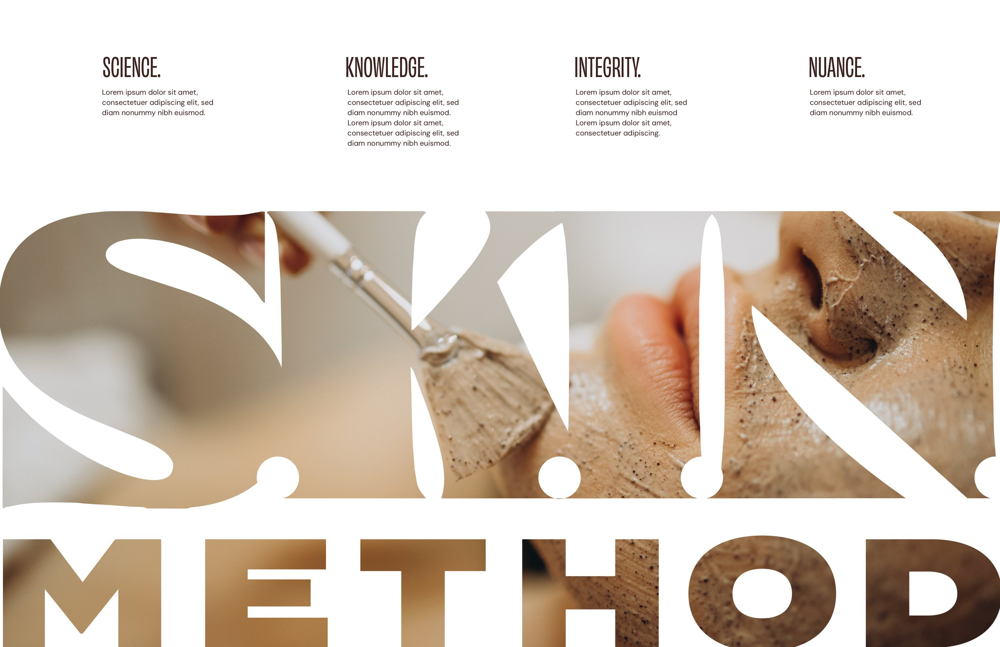
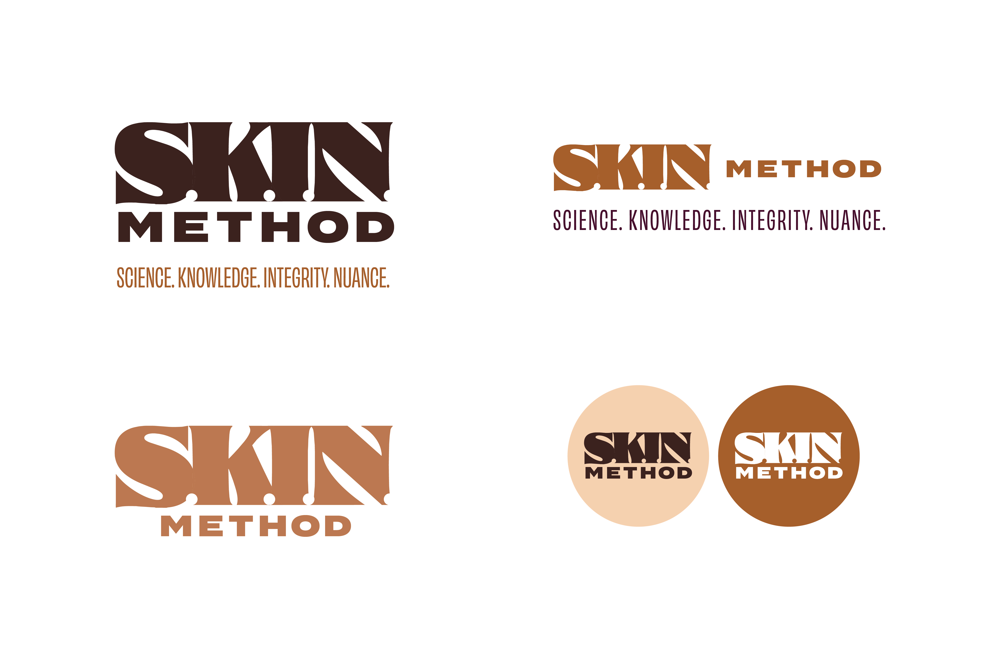
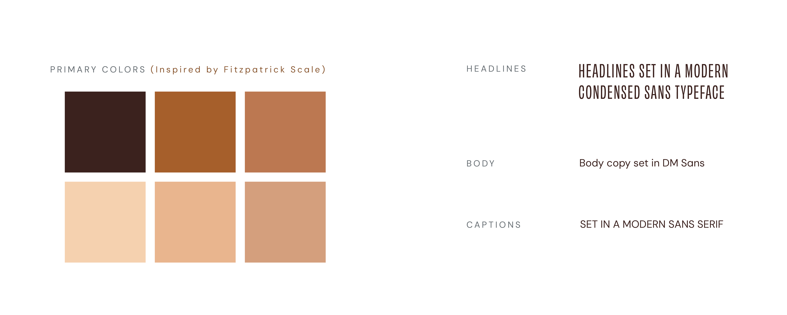

Three directions.
For each direction you'll see the logo on its own, the logo in context, variations on the mark (horizontal and stacked lockups, social profile, and more), and where the color and type could go.
One thing to keep in mind: these look finished, but they're very much not. Nothing here is final or ready for print. Think of them as polished concepts to react to, not decisions that are set in stone.
Crafted Intention
This direction is about precision you can feel. Every letter is placed with care and works together as a single, considered unit. It mirrors how S·K·I·N· works: nothing arbitrary, nothing rushed, every decision made on purpose.
- → The wordmark is built as one unit. The spacing, the interpunct dots, and the way SKIN and METHOD lock together are all deliberate. It reads as composed, not assembled.
- → Restraint is the point. Even rhythm and clean forms signal control and care without having to announce it.
- → A soft curve lives inside the letterforms for a touch of warmth, but the foundation is craft and unity.

- → Across a calm, editorial layout, the identity keeps its composure. The four values get room to breathe, which reflects the unhurried, considered way the work gets done.

- → Stacked, horizontal, wordmark-only, and a circular badge. Each holds the same careful balance, so the identity stays intact on a sign, a screen, or a stamp.

- → The palette references a range drawn from the Fitzpatrick spectrum, the scale used to describe skin tone. It pulls from across that range rather than settling on a single tone, because S·K·I·N· serves everyone.
- → A modern serif headline paired with a clean sans for body gives the system warmth and credibility at once.
The Protocol
This direction is science-forward and clinical, on purpose. It treats the brand the way S·K·I·N· treats skin: close attention, real evidence, a clear method. It looks like expertise, because it is.

- → The dotted S.K.I.N reads like clinical notation. Precise, deliberate, methodical.
- → The "+" and crop marks work on a few levels at once: a target for focus and precision, a zoom-in on the detail that matters, and a nod to the reference and citation marks used to source information. Together they say this is a brand that looks closely and shows its work.
- → The "+" also stands on its own as a mark, so the identity holds at any size.

- → The application maps points of focus directly onto the skin, like an analysis in progress. It reads as a method you can see, not a claim you have to take on faith.

- → Stacked, horizontal, centered, and a badge. The "+" carries the brand even where the full wordmark can't go.

- → This palette steps away from literal skin tones and leans cooler, on purpose. Going cooler keeps the brand skin color agnostic, so the system stays open to everyone S·K·I·N· serves rather than tied to any one tone. Palette is still in exploration.
- → A modern sans headline over a serif body reads like a clinical journal: structured, precise, easy to trust.
Earned Confidence
This direction stands proud, because S·K·I·N· has earned it. Years of experience, real results, and a methodology Rebecca and Genevieve stand behind completely. The identity carries that same self-assurance: it takes up space and doesn't apologize for it.
- → SKIN is set in a bold serif, and it's the one serif in the lockup, so it stands on its own and commands the eye.
- → METHOD anchors it in a clean, grounded sans, so the whole thing reads assured rather than ornamental.

- → The wordmark goes large and full-bleed, set right against the work itself. It's a statement: this is who we are, look closely.

- → Light and dark badges plus a compressed lockup. The identity keeps its presence whether it's large and loud or small and quiet.

- → The palette shows the full Fitzpatrick spectrum, every tone, not a sample. That's deliberate: S·K·I·N· serves every skin, and the system represents all of it rather than defaulting to one.
- → There's intentional tension between the wide, weighted letters of the wordmark and the condensed headline type around it. That contrast is where the confidence and edge come from.